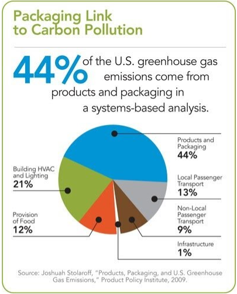

Avoid disposable plastic/ use reusable containers

×

Why is it good for the environment?
Purchasing reusable containers and bags as opposed to using single-use containers can help drastically reduce your carbon footprint. In the 21st century, single-use containers and bags are more readily available than ever. While continuing to use these readily available and cheap containers may be convenient, it has an unseen consequence on the environment. According to a 2020 report from the University of Utrecht, reusable packaging is 85% more climate-friendly than single-use packaging in terms of carbon emissions. In the process of creating single-use packaging, fossil fuels are burnt to create CO2 at every step from creation to transportation. All of this comes without even looking at the other negative impacts of single-use packaging such as sea pollution and the destruction of public infrastructure. Simply deciding to stop using single-use packaging in our daily lives can help the environment drastically and reduce your carbon footprint.
Why it is beneficial to the average consumer?
Using reusable packaging can help reduce bills for single-use packaging. Spending money on a set of reusable packaging for things like groceries and food can reduce money spent on packaging in the long run and last you for years. Additionally, reusable packaging tends to be more robust and able to withstand stronger conditions than single-use. By simply spending the money once, the total amount of money spent on packaging can go down.